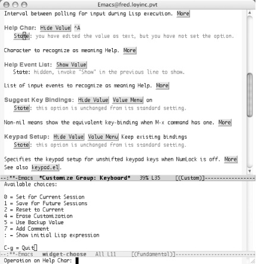

|
|
< Day Day Up > |
|
10.1. Using CustomEmacs now ships with a quirky graphical-but-not interface that allows you to customize most aspects of Emacs without knowing the gory details. This feature, known as Custom, can be accessed by typing M-x custom or by clicking the tools icon on the toolbar.
10.1.1 Navigating CustomYou can move around in a given Custom screen much the way you do in any other part of Emacs. All of the basic cursor movement commands like C-n and C-p work just as they should. But that's only part of the story in Custom. To accomplish anything useful, you need to activate special words and phrases. Those bits of text in grey boxes that look like buttons are the words and phrases in question. To activate one of these buttons, click on the button with the mouse or position your cursor inside its borders and press Enter. Figure 10-1 highlights these options. Figure 10-1. Custom button activation using the mouse cursor (top) and the keyboard cursor (bottom) (Mac OS X)When you finish looking at a screen, if you are not interested in changing anything, you can type C-x k to kill the current buffer and go back to the previous screen. You can also activate the Finish button in the common header set discussed next. 10.1.2 Common OptionsAt the top of each page in Custom is a common set of buttons shown in Figure 10-2. These options affect the entire buffer. Figure 10-2. The actions common to all pages in Custom (Mac OS X) From here you can perform any of the following tasks:
These options are useful when you modify more than one option on a page and want to save them all at once (and in the same way). Custom corrals options into customization groups, which are set up in a hierarchy of parent and child groups. To go to the parent group for the group you're looking at, choose the button for the parent group in question following the Go to parent group: prompt. To make it easier to find things, a group might have more than one parent. For example, the I18n (internationalization) group has two parents, Environment and Editing, as shown in Figure 10-3. Figure 10-3. Custom's Go to parent group promptChoosing Go to parent group is much like choosing Finish but without closing the buffer. It's a useful option if you're just poking around looking for related variables. We'll show you better ways to find particular features to customize later in this chapter. 10.1.3 Customizing with CustomAfter you learn your way around, you can tackle customizing Emacs. Each screen of Custom lists variables and other settings. You can edit the value of any variable in the grey text field to the right of variable's name. The current value should be listed. Just delete the current value and type the new value. Changing a value, however, is not the last step you have to take. You need to save the change before it will take effect. You use the State button to save the change (as mentioned earlier, to save all the values on a page in the same way, you can use the options near the top of the screen). As with other parts of Custom, you can use your mouse or the keyboard. Clicking the left mouse button on State should bring up the list shown in Figure 10-4. Depending on the variable and the change you made (if any), you may or may not have all of the options available. Figure 10-4. Using the mouse to save or reset an option (Mac OS X)Of course, you can also activate the State button by placing your cursor on it and pressing Enter. That should create a second window with effectively the same options you get when using the mouse. Figure 10-5 shows the options you see using the Enter key to select State. This list is dynamic, showing only options that are available to you. (It won't show any options if you haven't changed anything yet, but it beeps with an error.) Figure 10-5. Using the keyboard to save or reset an option (Mac OS X)When using the mouse, simply select the desired choice from the list. When using the text approach, type the number (or other character) corresponding to your desired choice. The options available are similar to those that apply to the entire buffer. You'll see the familiar save and reset options along with a few new ones:
If you make a mistake or supply a value that is not appropriate for the variable, you get a brief error message in the minibuffer. As with other utilities that grew up in the world of Unix, no news is good news. If you don't see any error messages, your change was successfully saved. 10.1.4 An Abbrev Mode ExampleWord abbreviation mode is a wonderful way to correct typos on the fly. But it can't work that way unless it is turned on. Let's use Custom to turn on word abbreviation mode (discussed in Chapter 3).
Finally, we're at a screen where we can set the option! Notice that the first content line, Abbrev Mode group, says next to the State button visible group members are all at standard settings. Also note that Abbrev Mode, near the bottom of the screen, says this option is unchanged from its standard setting. We'll turn on the Abbrev Mode option by pressing the Toggle button.
The text near Abbrev Mode group now says, You have edited something in this group, but not set it. The text near the Abbrev Mode option says, you have edited the value as text, but you have not set the option. These are clear hints that we must take one more step to set this option. And if those weren't hints enough, the minibuffer explicitly instructs, To install your edits, invoke [State] and choose the Set operation. We could click on the State button next to the option, but it's just as convenient (if not more convenient) to click on the Save For Future Sessions option near the top of the screen. This saves all options we've changed in the buffer, which in our case is just one option.
Next to the Abbrev Mode group it now says, something in this group has been set and saved. Next to the Abbrev Mode option it says, this option has been set and saved. Note also that Abbrev appears on the mode line now; we have indeed successfully turned on word abbreviation mode. Click Finish repeatedly to kill all the Custom buffers. Congratulations; you're on your way to customizing Emacs. You should spend some time wandering around in the various groups Custom offers to get a sense of the things you can control. We'll look at the popular topics of customizing fonts, colors, and keyboard mappings in later sections. But Custom offers a much wider variety of areas to tweak. Don't be afraid to look around. You can always use the Reset option to undo something that doesn't behave the way you expected or wanted. 10.1.5 The Options MenuYou can also access Custom through a bit of a back door: the Options menu. Figure 10-6 shows the Options menu. There are three key entries at this top level: Figure 10-6. The Options menu (Windows)
10.1.6 A Dired ExampleLet's tackle another Custom example with the help of the Options menu. Dired (discussed in Chapter 5) has many customizable features. One such feature is the dired-view-command-alist variable. This is a list of helper applications that allow you to open various kinds of files. This feature can be quite handy for viewing binary files such as images or PDF files. This list of helper applications is tailored to Linux. If you want to use other applications or you're on a Windows or Mac system, you'll need to customize this variable. Before you customize this option, you need to open a directory or
simply type C-x d to enter Dired.
Next, from the Options
The minibuffer prompts for an option name. We want to customize dired-view-command-alist.
You should see the familiar Custom options for saving and resetting the values along with the value of the dired-view-command-alist variable. For this particular variable, we have a list of entries for common file types including PostScript files, PDF documents, and images. To alter one of the existing entries, simply move to the String line and edit the text in grey to launch the application you would like to use. (You can also alter the filename pattern by editing the text in the Regexp line.) For example, PDF documents can be viewed with the open command in Mac OS X, so we could change that line as shown in Figure 10-7. In fact, on Mac OS X, you can use the generic open command for just about every type of file. On Windows it is even easier. Simply enter %s as the string, and Windows uses its default application to open that file type. Figure 10-7. Editing a list entry in Custom (Mac OS X)If you don't use DVI documents, you can get rid of that association using the DEL button shown in Figure 10-8. Figure 10-8. Deleting a list entry in Custom (Mac OS X)You can also add new document types and viewers by clicking on any of the INS buttons. (The order of the associations isn't important for this particular variable, but it might matter for other lists.) To insert a new association before the PDF entry, activate the INS button to the left of the PDF entry.
Now you can add an association for playing MP3 files on a PC by editing both the Regexp and String lines. Note that you'd have to supply a path to your helper application (winamp in this example) that matched your system. As mentioned earlier, if winamp was already the default helper application for MP3s, you could simply type %s for the String instead of the complete path to winamp.
You may have noticed the Save Changes option in the Options menu.
This menu item saves changes you make through the Options menu. For
example, you can modify such settings as whether or not the toolbar
is visible or the Save Place in Files between Sessions option. It
does not save changes you have made through Custom—even if you
launched Custom from one of the Options For our Dired variable example, then, you'll need to select one of the Save options available. In this case, we'll save it for the current session only.
When you're done saving your changes, you can exit the buffer as usual by clicking the Finish button, typing q, or typing C-x k to kill the buffer. 10.1.7 But Where Is the Variable I Want?One of the biggest stumbling blocks to using Custom is knowing where a particular variable is located. Custom has a lot of groups and subgroups—and they aren't always intuitive. There are two quick ways to "search" for a specific variable. You can press Tab to use the completion feature in the minibuffer or you can browse through the entire Custom hierarchy. To use the completion
approach, type M-x customize-option or select
Options You can also create a custom buffer with options matching a regular
expression with M-x
customize-apropos (or Options If you want to browse the hierarchy to see the related groups of
variables in a reasonably compact view, select Options Figure 10-9. Browsing customization groups (Mac OS X)You can activate the [+] and [-] buttons just like you do other Custom buttons (click on them with your mouse or move the keyboard cursor to them and press Enter.) This allows you to browse the entire set of Custom groups and subgroups. After you find the variable you're looking for, click on the Option button next to the variable or click on the Group button for the variable's parent group if you want to edit multiple variables in the group. |
|
|
< Day Day Up > |
|

 Customize Emacs menu, select the
Specific Option item.
Customize Emacs menu, select the
Specific Option item.